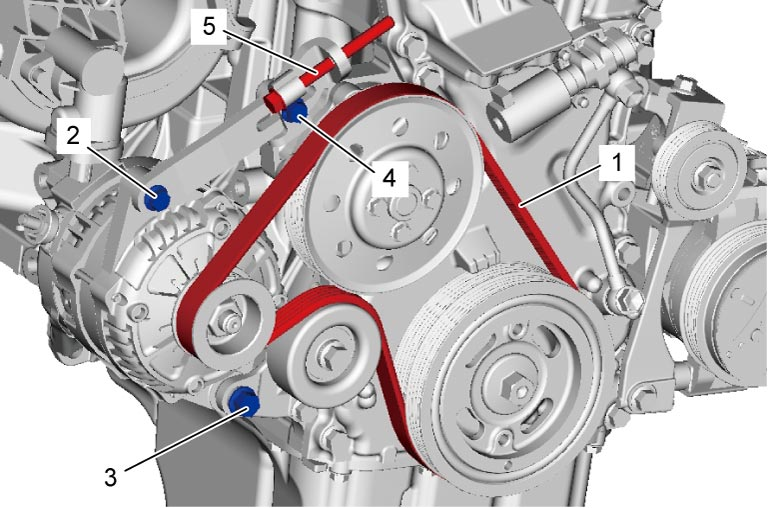
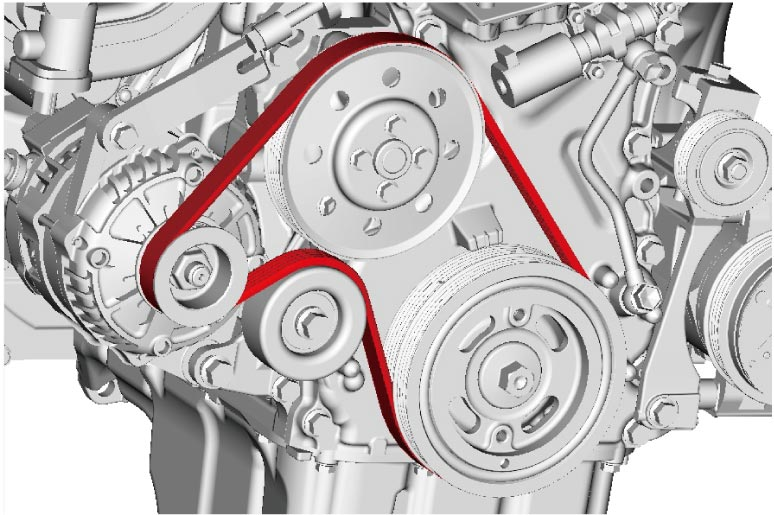

1J
| Water Pump / Generator Drive Belt Removal and Installation |
Removal
1)Remove engine undercover.
2)On vehicle equipped with A/C, remove compressor drive belt before removing water pump / generator drive belt (1).
•Manual A/C model: 
•Automatic A/C model:
•Automatic A/C model:
3)Loosen generator bolt (2), pivot bolt (3) and adjuster bolt (4).
4)Loosen generator adjusting bolt (5), and then remove water pump / generator drive belt.


 "Expand image")
5)Remove tensioner pulley if necessary.
Installation
1)Install tensioner pulley and tighten pulley bolt to specified torque, if removed.
2)Install water pump / generator drive belt (1) as shown in figure.

 "Expand image")
3)Adjust belt tension.
4)If vehicle equipped with A/C, install compressor drive belt.
•Manual A/C model:
•Automatic A/C model:
•Automatic A/C model:
NOTE:
Check that drive belt is installed in grooves of each pulley correctly.
5)Install engine undercover.